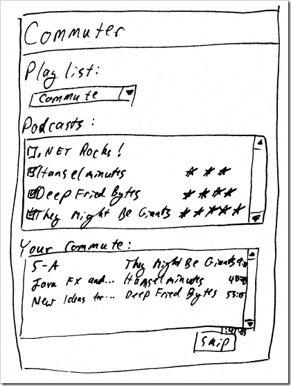

|
|
Archive for the ‘Patterns’ Category
Friday, July 3rd, 2009
I had a twitter conversation recently with Edward Tanguay about his StackOverflow question on binding menus to an Observable Collection. Naturally, I locked on to the ObservableCollection part and didn't get the true gist of his question. I took a step back, reread his question and the provided answers, and finally caught on to the problem. I wish I could upvote Kent Boogaart's answer more than once, because it set me on a trail of discovery.
This example uses Update Controls. Download the example source code: databoundmenus.zip.
There is not just one way to make a WPF menu work. There are several techniques that you have to combine. Much of an application's menu is static. Some of it is context sensitive, and only appears in certain conditions. And in a few places, the menu items are dynamic, like recently opened files or currently open windows. Update Controls can help with all of these things.
Declarative menu structure
For the static menus, you want to declare the structure entirely in XAML. This gives you the greatest design/code separation, and the best tool support. Use Command Binding for all menu items.
<Menu DockPanel.Dock="Top">
<MenuItem Header="_File">
<MenuItem Header="_New" Command="{Binding FileNewCommand}"/>
<MenuItem Header="_Open" Command="{Binding FileOpenCommand}"/>
<MenuItem Header="_Save" Command="{Binding FileSaveCommand}"/>
<MenuItem Header="_Close" Command="{Binding FileCloseCommand}"/>
</MenuItem>
</Menu>
Use Update Controls MakeCommand to create all of the bindable ICommand properties. The When clause will enable and disable the menu item.
public ICommand FileSaveCommand
{
get
{
// We can only save a file when one is open.
return MakeCommand
.When(() => _dataModel.OpenFileName != null)
.Do(() => _dataModel.LastAction = "Save");
}
}
Some of the menu items are not application actions, but window actions. These can be handled in code-behind.
<Separator/>
<MenuItem Header="E_xit" Click="Exit_Click"/>
private void Exit_Click(object sender, RoutedEventArgs e)
{
Close();
}
Context sensitive menus
You want context sensitive menus to appear under certain conditions. WPF has a mechanism for that: the DataTrigger. A DataTrigger sets a control property when a data property is equal to a specific value. In this case, we want to set a MenuItem's Visibility property to Hidden when the data property IsFileOpen is False.
<Window.Resources>
<Style x:Key="VisibleWhenFileIsOpen" TargetType="MenuItem">
<Style.Triggers>
<DataTrigger Binding="{Binding IsFileOpen}" Value="False">
<Setter Property="Visibility" Value="Hidden"/>
</DataTrigger>
</Style.Triggers>
</Style>
</Window.Resources>
We apply this style to any menu that is sensitive to this context.
<MenuItem Header="_Edit" Style="{StaticResource VisibleWhenFileIsOpen}">
<MenuItem Header="Cu_t"/>
<MenuItem Header="_Copy"/>
<MenuItem Header="_Paste"/>
</MenuItem>
DataTriggers automatically reset. When the IsFileOpen data property is no longer False, the Visibility control property will go back to the default Visible. There is no need to create another trigger for that rule.
Dynamic menus
For recently opened files or currently open windows, you want each menu item to represent a data object. You want to bind the menu to a list.
If you bind to the raw data objects, you will have a hard time getting exactly the behavior that you want in the view. XAML is declarative, and is easiest to use when the data is already in the right format. That's where the View Model comes in.
public class RecentFileViewModel
{
private int _index;
private string _fileName;
private IFileHandler _fileHandler;
public RecentFileViewModel(int index, string fileName, IFileHandler fileHandler)
{
_index = index;
_fileName = fileName;
_fileHandler = fileHandler;
}
public string FileName
{
get { return string.Format("_{0} - {1}", _index + 1, _fileName); }
}
public ICommand Open
{
get
{
return MakeCommand
.Do(() => _fileHandler.Open(_fileName));
}
}
}
The recent file view model presents the file name in a format suitable for the menu item. It even adds the underscore to turn the 1-based index into a hot key.
The view model also provides the command to open the file. It doesn't actually perform the operation; it delegates to a file handler and provides the context.
We provide a list of these view models based on the list of recently opened files.
public IEnumerable<RecentFileViewModel> RecentFiles
{
get
{
// Create a RecentFileViewModel for each recent file.
// The view model serves the menu item.
return _dataModel.RecentFiles
.Select((fileName, index) =>
new RecentFileViewModel(index, fileName, this));
}
}
Please note that this pattern does not work with ObservableCollection. Once you call .Select() on an ObservableCollection, it is no longer observable. This pattern only works with Update Controls.
Now we need to bind MenuItems to this collection. My first instinct was to set the ItemTemplate of the parent MenuItem to a DataTemplate containing a child MenuItem. The problem with that is that a DataTemplate controls the content of the child item, not the child item itself. So instead of setting ItemTemplate, you need to set the ItemContainerStyle.
<MenuItem Header="_Recent Files" ItemsSource="{Binding RecentFiles}">
<MenuItem.ItemContainerStyle>
<Style>
<Setter Property="MenuItem.Header" Value="{Binding FileName}"/>
<Setter Property="MenuItem.Command" Value="{Binding Open}"/>
</Style>
</MenuItem.ItemContainerStyle>
</MenuItem>
A WPF menu should not be defined using just one technique. If you choose something to simple, you won't be able to handle the more interactive requirements. If you choose something too complex, you loose tool support and put too much of your design in code. With this combination of techniques, you can create interactive menus with ease.
Posted in Patterns, Update Controls | 1 Comment »
Monday, May 11th, 2009
I'm working on an application to automatically manage an iTunes playlist. I've done the proof-of-concept and created a historic model. Now I want to describe the functionality of the user interface. I'll do this by drawing a UI mockup, and by defining an interface for the View Model.
The View Model is the name typically used in WPF for Martin Fowler's Presentation Model pattern. It is a class designed specifically for a view. It presents all of the information visible on the view, it accepts all of the input that the view gathers, and it provides all of the commands that the view exposes.
I like to think of a UI as merely a convenience. If the user had a compiler instead of a UI, he could still use your application. The View Model is the user's API to your program.
The View Model
An API is best defined as an interface. Here's the API that we are presenting to the user:
public interface IPlaylist
{
string Name { get; }
}
public interface IPodcast
{
string Name { get; }
bool Selected { get; set; }
int Rank { get; set; }
}
public interface IPodcastEpisode
{
string Name { get; }
string PodcastName { get; }
string DurationAsString { get; }
}
public interface ICommuterViewModel
{
IEnumerable<IPlaylist> Playlists { get; }
IPlaylist SelectedPlaylist { get; set; }
IEnumerable<IPodcast> Podcasts { get; }
IEnumerable<IPodcastEpisode> Queue { get; }
IPodcastEpisode SelectedEpisode { get; set; }
string TotalDurationAsString { get; }
ICommand Skip { get; }
}
This API lets the user see all of their playlists, and select one. It lets them see all of their podcasts, and individually select and rank them. Then it shows their queue, lets them select an episode, and skip it.
The mockup
For the user's convenience, we will also provide this view (my code is much neater than my drawing):

You can see how each of the View Model properties maps to the view. With this interface, mockup, and Blend, a designer can create a nice convenient UI for our user. Just so they don't have to get their hands dirty with a compiler. That's our next step.
Posted in Commuter, Patterns | No Comments »
Sunday, April 19th, 2009
Jimmy Bogard created AutoMapper to generate left-hand-right-hand code. This is the mapping code that often appears when you are translating one object model to another parallel object model. He gives the example of mapping a data model to a view model:
public class OrderToOrderViewModelMapper
{
public OrderViewModel Map(Order order)
{
return new OrderViewModel
{
CustomerFullName = order.Customer.GetFullName(),
Total = order.GetTotal(),
LineItems = order.GetLineItems()
.Select(x => new OrderLineItemViewModel
{
Price = x.Price,
Quantity = x.Quantity,
Total = x.GetTotal(),
ProductName = x.Product.Name
})
.ToArray()
};
}
}
This misses the point. The problem is not in the tedious mapping code. The problem is that you are doubling the amount of independent data.
Let me start at the beginning. This is a field:
public class Customer
{
private string _fullName;
}
This field is independent data. It can change independent of anything else in the system.
This is a property:
public class Customer
{
private string _fullName;
public string FullName
{
get { return _fullName; }
set { _fullName = value; }
}
}
This property is dependent data. Its behavior depends entirely on the field.
This is an immutable field:
public class OrderViewModel
{
private Order _order;
public OrderViewModel(Order order)
{
_order = order;
}
}
This immutable field is not independent. It cannot be changed. It is immutable.
This is another property:
public class OrderViewModel
{
private Order _order;
public OrderViewModel(Order order)
{
_order = order;
}
public string CustomerFullName
{
get { return _order.Customer.FullName; }
}
}
Adding independent data to a system increases its degrees of freedom. Adding dependent data does not. Adding an immutable field does not.
You want no more degrees of freedom in the system than the problem calls for. Degrees of freedom are moving parts. Moving parts break. Moving parts need to be tested. You should therefore avoid adding independent data when dependent data is sufficient.
The problem with Jimmy Bogard's example wasn't the code to copy data from one object to another. It was that data had to be copied at all. The view model should not have fields (independent data). It should have properties (dependent data).
Posted in Patterns, dof | 4 Comments »
Tuesday, March 10th, 2009
Robert C. Martin's Design Principles and Design Patterns have shaped my career. His influential paper has been recently rediscovered, and given the moniker "The SOLID Principles". I'm excited to see the reach of his influence expanding, and happy to have a new group of people to discuss these principles with.
This week on the Alt.NET Podcast, Mike Moore talks with Scott Bellware on the state of Alt.NET. In this discussion, Bellware raises an interesting question. Why SOLID?
Of course, Scott and Mike both know the answer, and the question itself wasn't the point of the conversation. They were expressing concern that most of the people new to the SOLID principles can't articulate why SOLID is good.
While the new moniker gives us a name to invoke to begin a discussion, it unfortunately creates a barrier. Now that we have a mnemonic to help us remember the 5 principles, we can list them without reading the original paper. But that paper starts by answering the fundamental question, "Why?" Why does software go bad? Why does software rot?
I won't go through the reasons here. I cannot improve upon Uncle Bob's work. Instead, I encourage you to please click on the link above, print out the paper, and read it slowly. It may change your career, the same way it changed mine.
Posted in Patterns | 1 Comment »
Monday, January 19th, 2009
View a video of this demo. Download version 2.0.3 of Update Controls and the demo source code to follow along.
 Intent Intent
The Navigation Model Pattern removes dependencies between view objects and makes UI state available to presentation logic.
Use the Navigation Model Pattern when controls interact with one another in a non-trivial manner. For example, selecting an object in a list displays details in a grid. Or checking a checkbox enables an associated control.
Problem
WPF makes it really easy to bind a property of one control to a property of another. For example, if the selected item in a list box becomes the data context for a grid, the code might look like this:
<ListBox ItemsSource="{Binding People}" x:Name="personListBox">
<!-- ... -->
</ListBox>
<Grid DataContext="{Binding ElementName=personListBox, Path=SelectedItem}">
<!-- ... -->
<Label Grid.Row="0" Grid.Column="0" Content="First Name:"/>
<TextBox Grid.Row="0" Grid.Column="1" Text="{Binding First}"/>
<!-- ... -->
</Grid>
But direct control-to-control data binding causes trouble. Your UI is no longer composable, since controls directly reference one another. It is difficult to perform presentation logic on control properties, since the presentation model would have a reverse dependency upon the view. And it is difficult to programmatically set a control property based on user action.
Solution
Instead of binding controls directly to one another, move all of the user selection state into a Navigation Model. The navigation model is one shared location where user selection state resides. All controls that use this shared state bind to this one place. The controls don't know about one another. Any control can set the selection state, and any control can consume it. When the selection changes, all controls are updated.
Create a navigation model class
The navigation model is just a class. It has properties that correspond to the user's current selections. It has no persistent storage for this state. It survives only as long as the user's session.
In the example that we've been building, the user can select a Person. The resulting navigation model looks like this:
public class NavigationModel { private Person _selectedPerson;
#region Independent properties
// Generated by Update Controls --------------------------------
private Independent _indSelectedPerson = new Independent();
public Person SelectedPerson
{
get { _indSelectedPerson.OnGet(); return _selectedPerson; }
set { _indSelectedPerson.OnSet(); _selectedPerson = value; }
}
// End generated code --------------------------------
#endregion
}
To generate this class, declare just the field. Select the field and press Ctrl+D, G. The Update Controls add-in will generate the property and the Independent sentry.
Expose the navigation model through the presentation model
The presentation model is a thin, transparent wrapper around the data and navigation models. It adds presentation logic where necessary, but does not hide these raw models from the view.
The presentation model initializes a reference to the navigation model in its constructor, and exposes that reference as a property. It also uses that reference in other presentation properties.
public class PresentationModel { private PersonList _personList; private NavigationModel _navigationModel;
public PresentationModel(PersonList personList, NavigationModel navigationModel)
{
_personList = personList;
_navigationModel = navigationModel;
}
public PersonList PersonList
{
get { return _personList; }
}
public NavigationModel NavigationModel
{
get { return _navigationModel; }
}
public string Title
{
get { return "People - " +
(_navigationModel.SelectedPerson != null ?
_navigationModel.SelectedPerson.Name : ""); }
}
}
References to the data model and presentation model are not generated using Ctrl+D, G. These models don't change, so there is no need to inject Independent sentries for change tracking.
Connect controls to the navigation model
The view can access navigation model properties through the presentation model's reference. Connect the SelectedItem property of the list box to the navigation model to allow the user to change it. Connect the DataContext property of the details grid to the navigation model so that it responds to user selection.
<ListBox ItemsSource="{u:Update PersonList.People}" SelectedItem="{u:Update NavigationModel.SelectedPerson}">
<!-- ... -->
</ListBox>
<Grid DataContext="{u:Update NavigationModel.SelectedPerson}">
<!-- ... -->
<Label Grid.Row="0" Grid.Column="0" Content="First Name:"/>
<TextBox Grid.Row="0" Grid.Column="1" Text="{u:Update First}"/>
<!-- ... -->
</Grid>
We'll want some controls to become enabled only when conditions are right. To facilitate this, we add a boolean IsPersonSelected property to the navigation model. Be sure to use the SelectedPerson property, not the _selectedPerson field, so that we get the benefit of change tracking.
public class NavigationModel { private Person _selectedPerson;
#region Independent properties // ...
public bool IsPersonSelected
{
get { return SelectedPerson != null; }
}
}
Connect this property to the IsEnabled property of selected controls. For entire groups of controls, we wrap the group in a container, and connect the property of the container to the boolean. We can't use the existing container, because it changes its own data context.
<Button Content="Delete" IsEnabled="{u:Update NavigationModel.IsPersonSelected}" Click="DeleteButton_Click" />
<StackPanel IsEnabled="{u:Update NavigationModel.IsPersonSelected}">
<Grid DataContext="{u:Update NavigationModel.SelectedPerson}">
<!-- ... -->
</Grid>
</StackPanel>
Consequences
While this pattern decouples view components to make them more composable, it does so at the cost of injecting code where once only markup was necessary. This means that it is difficult for a designer to express the behavior of an application without involving a developer.
To mitigate this cost, designers and developers should agree on a contract beforehand. Obvious properties, like SelectedPerson, should be added to the navigation model immediately. Less obvious properties, like IsPersonSelected, can be added afterward. It is very difficult to refactor in a navigation model after view components have been constructed, so the architecture should start with this pattern in place.
It is also troublesome that setting the DataContext of a control makes it impossible to get back to the presentation model. If detail controls need access to presentation logic or navigation state, then an additional presentation/navigation layer must be injected. This will be demonstrated in a future post.
Posted in Patterns, Update Controls | No Comments »
Saturday, December 27th, 2008
View a video of this demo.
The Presentation Model pattern, otherwise known as Model/View/ViewModel, inserts an intermediate class between your data model and your view. This intermediate class implements presentation logic, behavior directly related to user interaction. This logic doesn't belong in the data model, because it is not related to business logic. Nor does it belong in the view, because the view is difficult to unit test, and is more concerned with style and layout.
Current implementations of Presentation Model in WPF rely on data binding, which requires you to implement INotifyPropertyChanged. While this is just a minor inconvenience when binding directly to data objects, it is particularly troublesome to a presentation model. Since a presentation model consumes properties of a data model, it must register for PropertyChanged events. And since the view binds to the presentation model rather than the data model, it must turn around and fire those events again.
Here's my solution
As I posted earlier, Update Controls replaces WPF data binding and does not require you to implement INotifyPropertyChanged. I've just published a new version of Update Controls (2.0.2), which adds a feature especially useful for the Presentation Model pattern. You can now use dotted identifier syntax to reference objects indirectly. Now the presentation model doesn't have to pass through all of the properties of the data model. It only needs to implement those that it intends to tweak for the UI, and expose a reference to the data model for access to all the others.
Wrap the data object
In the previous post, we created a Person data object and some XAML that bound to it. We'll keep the same Person object, but wrap it in a PersonPresentation object. This object exposes the Person as a property, and adds UI logic for the window title.
public class PersonPresentation
{
private Person _person;
public PersonPresentation(Person person)
{
_person = person;
}
public Person Person
{
get { return _person; }
}
public string Title
{
get { return "Person - " + _person.Display; }
}
}
Instead of directly using Person as the DataContext for the window, use a PersonPresentation.
public partial class Window1 : Window
{
public Window1()
{
InitializeComponent();
DataContext = new PersonPresentation(new Person());
}
}
Now use dotted-identifier syntax in the XAML to access the Person for data properties. But for UI properties, like the window title, go directly after the PersonPresentation object.
<Window x:Class="UpdateControls.XAML.Test.Window1"
xmlns="http://schemas.microsoft.com/winfx/2006/xaml/presentation"
xmlns:x="http://schemas.microsoft.com/winfx/2006/xaml"
xmlns:u="clr-namespace:UpdateControls.XAML;assembly=UpdateControls.XAML"
Title="{u:Update Title}" Height="300" Width="300">
<StackPanel>
<StackPanel Orientation="Horizontal">
<Label Content="First Name:" Width="100"/>
<TextBox Text="{u:Update Person.FirstName}" Width="170"/>
</StackPanel>
<StackPanel Orientation="Horizontal">
<Label Content="Last Name:" Width="100"/>
<TextBox Text="{u:Update Person.LastName}" Width="170"/>
</StackPanel>
<StackPanel Orientation="Horizontal">
<Label Content="Display As:" Width="100"/>
<ComboBox SelectedIndex="{u:Update Person.DisplayStrategy}" Width="170">
<ComboBoxItem Content="{u:Update Person.FirstLast}" />
<ComboBoxItem Content="{u:Update Person.LastFirst}"/>
</ComboBox>
</StackPanel>
</StackPanel>
</Window>
With the Presentation Model pattern, you achieve separation of concerns. Business logic is encapsulated in the data model, style and layout are in the view, and interaction logic is in the presentation model.
Posted in Patterns, Update Controls | No Comments »
Thursday, September 25th, 2008
Can you implement publish-subscribe load balancing with MSMQ?
Surprisingly, prior to Windows Server 2008 the answer was no! (Well, technically the capability is in Vista too, but who runs Vista in their datacenter?)
It's a common scenario. I have work that I want to share among several load-balanced, redundant servers. Only one server can be working on an item at a time. If a server crashes while working on an item, then another server should pick it up instead.
What's the solution? Publish the work items to a queue and have each of the servers subscribe. The servers receive the work items transactionally, so that if the work fails or the server crashes it is aborted back to the queue. But while one server has the work item locked, other servers will not receive it. They will get work items further down in the queue.
The problem is that MSMQ 3.0 and prior cannot receive messages transactionally from a remote queue. This feature only works with local queues. Instead of a publish-subscribe model, you have to use a push model. Push the message to the machine that you want to process it.
John Breakwell posted your options. You can upgrade to Windows Server 2008, implement a dispatcher (turning your pub-sub into a push), or peek-then-receive. The last is not really an option, because it violates the requirement that only one server is working on an item at a time.
Here's my solution
I propose a fourth option. Don't use MSMQ. Instead, write a journal table in SQL Server. Getting the locking right is a bit tricky, but it's doable. (Hint: you will make use of UPDLOCK.)
Honestly, this is a primary use case for a queuing technology. No, this is the primary use case. How could you even release version 1.0 without support for pub-sub? I've gone my entire career assuming that this feature was there, only to find out in integration testing that it is lacking.
Posted in Databases, Patterns | No Comments »
Friday, August 22nd, 2008
"New" is the new "goto". As mock object testing frameworks and inversion of control containers are becoming more commonplace, we are encouraged to avoid having objects directly create other objects.
Why is "new" a bad word?
When a line of code includes the "new" keyword, it must also include the name of a concrete class. This line of code will appear within a different class (unless you are writing a singleton, in which case you have even bigger problems). You have just created a compile-time dependency between two classes.
The dependency inversion principle states that we should depend upon abstractions (i.e. interfaces and abstract base classes), rather than concrete classes. The "new" keyword immediately violates this principle because it forces us to depend upon a concrete class. The name after the "new" cannot be an interface or abstract base class, but a concrete packet of implementation.
Without dependency inversion, it is difficult or impossible to change units of behavior. If a class uses "new" to get access to a service component, you must change that code to replace it with a different service. If the change is a design-time decision, then recompiling the code just means more testing is required. But if the change is a run-time decision, then recompiling the code is not an option.
Without dependency inversion, it is difficult or impossible to mock objects for testing. If the code that you are testing is invoking "new", then the mock framework cannot intercept that and replace it with a test harness. The dummy object is there to observe the calls that leak out of the object that you are testing, and make sure that they are the ones that the test expects to induce. If those calls go into a concrete class, then the scope of the test is bigger than intended, and visibility is lost.
Building blocks
I once had a manager who compared good software component design to Legos. A complete solution can be built from interchangeable pieces. If you are using "new", your components are more like a puzzle pieces than building blocks. You create a solution out of pieces, but those pieces fit together in only one way.
As a rule of thumb, critically examine every "new" in your software. See if you can find a way to push it up through dependency injection. If you can, push it all the way out of your code and into an IoC container. The fewer "new"s, the better.
Posted in Patterns | No Comments »
Monday, June 30th, 2008
I've started a new project using Spring MVC. In doing so, I've had to invert my thinking.
Spring is an inversion of control container, which means that you don't code dependencies of one class directly upon another. Instead you put all of your dependencies into one configuration file and keep your code as loosely coupled as possible. This one configuration file creates a graph of objects, each with references to the others. Since the configuration file specifies the classes and references, the code for one class doesn't need to know the names of other classes.
Why is this important?
The dependency inversion principle tells us that it is better to depend upon something abstract than something concrete. This helps us to change how something is done without breaking the things that need it to be done. If your code depends upon an interface, you can change the thing that implements that interface without changing your code.
There are other reasons which have come to light since Robert Martin published his paper back in 1996. Dependency inversion makes unit testing easier, because you can replace the components that a unit calls with mock objects. Dependency inversion makes distributed computing easier, because you can replace business objects with proxies that call business logic on remote servers. In general, dependency inversion is a good goal.
How does Spring do it?
So if your class depends upon an interface rather than a concrete class, how does it get a reference to an object that implements that interface? It can't use "new" to create an instance, because "new" needs a concrete class name. To invert dependency, you have to move all of your "new"s into one place. That place is an inversion of control (IoC) container.
Spring reads an XML file that contains a bunch of object descriptions. You can think of each of these as a call to "new". Each one specifies a class name, an instance name, and a set of properties. These are write-once properties (what I like to call definitive), and should be initialized and never changed. These properties can include references to other object instances, thus forming a graph.
MVC
Spring MVC combines the dependency inversion principle with the model-view-controller pattern to create a pretty compelling web framework. The controllers and URL mappings are all configured through the IoC container. The URL mapper has a reference to each of the controllers, so it knows how to delegate the handling of a request. Because dependency has been inverted, the URL mapper doesn't know about the concrete classes that are the controllers, it only knows about an interface. So you can use the out-of-the-box URL mapper with your own custom controllers.
But it just so happens that Spring has a quaint mechanism for database access. In your XML file, you can configure a data source by providing a driver class name and a connection string to an instance of "org.apache.commons.dbcp.BasicDataSource". Then you can use this data source to execute queries using "org.springframework.jdbc.core.simple.SimpleJdbcTemplate". I wanted to use this technique from my data access layer. However, the XML file that defines the object graph is way up in my web layer. How can I push that object graph, or at least the data source, down through the business logic layer and into the data access layer?
The epiphany
That's when the full realization of dependency inversion hit me. I was thinking about the web layer depending upon the business logic layer, which then depended upon the data access layer. This is not the Spring way. Instead, the web, business logic, and data access layers are all independent. The IoC container depends upon them all. The individual components within these layers only depend upon interfaces.
So the one XML file declares a data source. It then declares a data access component and gives it a reference to the data source. Next comes a business logic component and with a reference to the data access component. Then, the controller with a reference to the business logic component. And finally, the URL mapper comes last with a reference to the controller. As more URLs, controllers, and components are added, this chain widens into a graph.
You can't pick and choose which pieces of your application use dependency inversion. Please don't try. Once you start down the Spring path, all dependencies are inverted. The graph that's defined at the highest layer of your application delves deep into the lowest, and touches all layers in between. Consider dependency inversion for your next project, and think carefully about the consequences.
Posted in Contracts, Java, Patterns | 2 Comments »
Tuesday, March 18th, 2008
I have released Update Controls .NET as an open source project.
Update Controls is a set of .NET Windows Forms controls that update themselves automatically. Instead of setting properties, you handle events. For example, the GetText event fires on an UpdateTextBox when it needs to update itself. The event returns the text string to display. Then, when any data that was used to calculate that string changes, the event fires again. Automatically.
Think of how you use a spreadsheet. You enter a formula in a cell, with references to other cells. When those other cells change, the formula is recalculated. You don't have to tell it to update, it just figures out when to do so.
I created the algorithm at the core of Update Controls almost ten years ago in C++. Since then, I've translated it first into Delphi, then Java, and finally C#. The Update Controls library is that core algorithm applied to the common Windows Forms controls. It also includes a handful of themed controls for better visual appeal.
Not data binding
For as long as Microsoft has done demos of VB, they've tried to convince us that we can write real software with zero lines of code. It works fine on the projector screen, but it fails to translate to a full-scale application. Once you get outside the box of direct column/control relationships, it is impossible to adapt data binding to your needs.
But Update Controls is completely flexible. You can start with a simple event that returns one value, but then modify it to combine two or more values as your needs change. Since you are writing real code, you are in complete control.
A data-bound control attaches directly to a column in the database, or a property of an object in the data model. It cannot call through more complex business logic.
But an Update Control can call any business logic that you specify. Whatever data the business logic touches in order to do its work, that data affects the control's behavior. When any of it changes, the event fires and calls the business logic again.
Not the observer pattern
The observer pattern is obsolete. It requires that you manually register each observer with each subject. To make it work, you have to know ahead of time all of the objects in the data model that affect each user interface component. A large portion of your source code is dedicated to making and breaking those connections.
Update Controls, on the other hand, discovers those dependencies on its own. It can see through business logic, so you don't have to directly tie your user interface to your data model. And if that business logic switches to a new path, the dependencies are updated as well.
The observer pattern also suffers from cascading redundant updates. If your observer depends upon two subjects and both are changed at the same time, the observer pattern will give you two updates. The problem gets even worse when you have indirect dependencies, as the redundancy rolls through the system like so many dominoes.
But Update Controls queues the updates until the last possible moment, so they occur only once. Even indirect dependencies are calculated in the best possible order, with each update being invoked just once as the information bubbles to the surface.
Please give it a try
The library works in C# and VB. It can be used in either Visual Studio 2005 or 2008, with .NET 2.0, 3.0, or 3.5. You can download the source code and build it yourself, or just run the convenient installer. Videos, demos, and documentation are all available to help you get started.
Once you write a Winforms app with Update Controls, you'll never want to code without them.
Posted in Licensing, Patterns, User Interface | No Comments »
|


{kind=link}